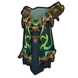

Sudário do Rei do Submundo
Manto · Tier 16 · Nível 48
Embora derrotado e sepultado incontáveis vezes, o Rei do Submundo sempre retorna com uma nova maquinação a reboque.
Atributos
Defesa
1.010
Economia
Valor
39.450.000
Tempo de fabricação
6d 8h
XP do comerciante
545.000
Trabalhadores: Invocador 40, Alfaiate 36, Feiticeiro 33
Receita


Marcos do projeto
3
Tempo de fabricação -20%
8
-112 Couro
14
Valor +25%
20
-41 Tecido
30
Chance de qualidade +1